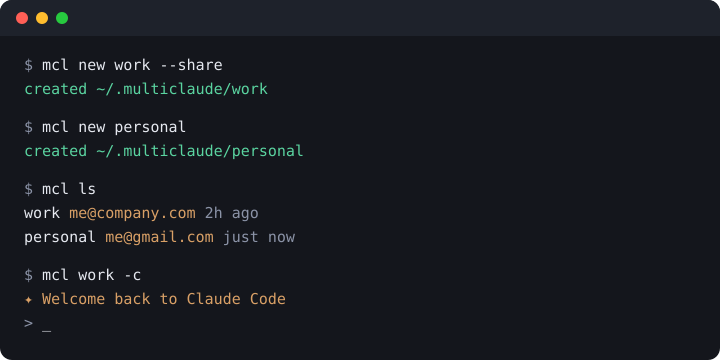
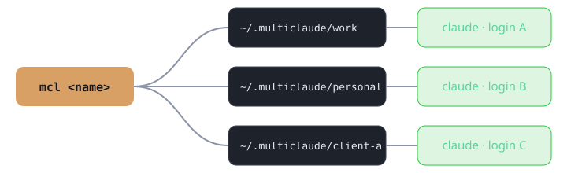

Stop logging out and back in. mcl gives each account its own isolated config, history and settings — and runs them side by side.
uv tool install git+https://github.com/mkalmousli/multiclaude

Separate login, history and settings per instance via CLAUDE_CONFIG_DIR. Nothing leaks between work and personal.
Run two accounts in two terminals at the same time. No logout, no lost context.
--share links your settings, CLAUDE.md, commands, agents and skills while logins stay private.
Every claude flag passes straight through. mcl work -c just works.
mcl ls shows each instance, its account email and when you last used it.
Tiny, pure Python, MIT licensed. Linux, macOS and Windows. Installs in seconds with uv or pipx.
